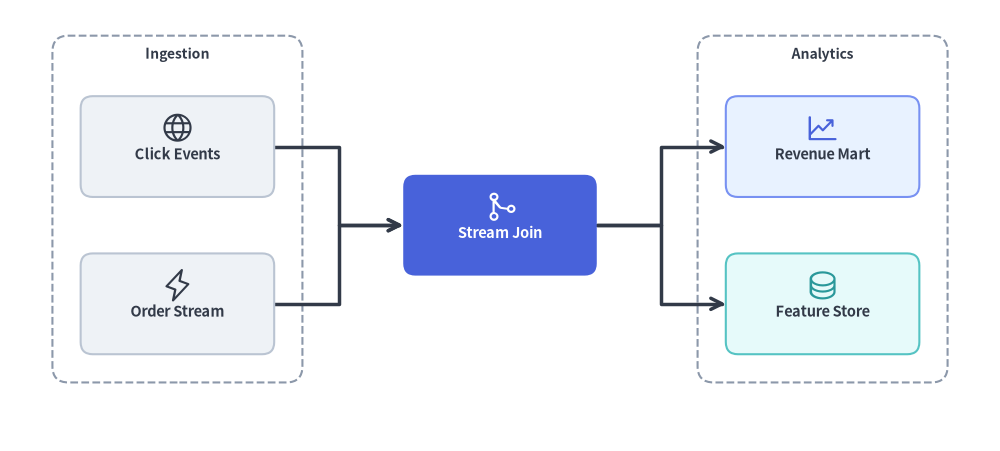
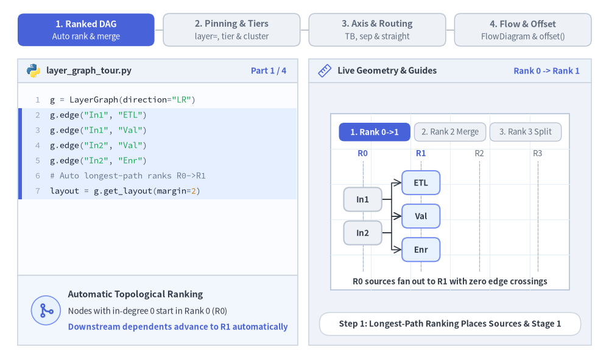
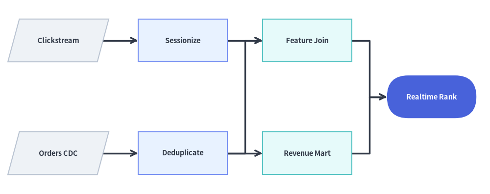
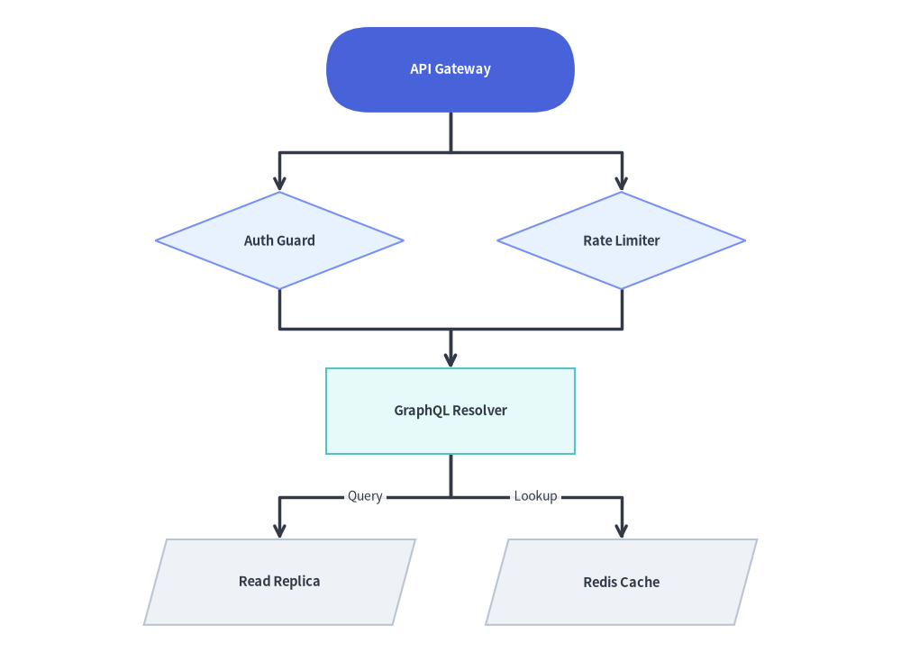

LayerGraph: Sugiyama Hierarchical DAGs & Pipelines
LayerGraph implements a Sugiyama-style layered Directed Acyclic Graph (DAG) coordinate solver—combining DFS cycle breaking, longest-path topological rank assignment, barycenter edge-crossing minimization, and Manhattan orthogonal routing.
It is the ideal coordinate calculator for CI/CD pipelines, ETL / data lineage graphs (dbt, Airflow), build dependency graphs, and multi-stage workflows where nodes progress through sequential ranks from left-to-right (direction="LR") or top-to-bottom (direction="TB"). Pair layout = g.get_layout() with FlowDiagram (Start, Process, Decision, Data, End) or drawlib.shapes and drawlib.lines to render rich workflow pipelines.

Source Code
from drawlib.canvas import save, setup
from drawlib.graph import LayerGraph
from drawlib.icons import phosphor
from drawlib.lines import lines
from drawlib.shapes import rectangle
from drawlib.styles import Styles
from drawlib.text import text
setup(width=124, height=56)
# Step 1: Declare ranked pipeline topology & calculate coordinates
g = LayerGraph(
direction="LR",
rank_sep=16.0,
node_sep=7.0,
default_node_width=24.0,
default_node_height=12.5,
)
# Rank 0: Ingestion Cluster
g.node("events", layer=0)
g.node("orders", layer=0)
g.cluster("ingest_box", ["events", "orders"], padding=3.5, header_height=4.0)
# Rank 1: Stream Processing Focal Node
g.node("joiner", layer=1)
# Rank 2: Analytics Cluster
g.node("mart", layer=2)
g.node("features", layer=2)
g.cluster("analytics_box", ["mart", "features"], padding=3.5, header_height=4.0)
g.edge("events", "joiner")
g.edge("orders", "joiner")
g.edge("joiner", "mart")
g.edge("joiner", "features")
layout = g.get_layout(width=124.0, height=56.0, margin=7.5)
# Step 2: Render stage clusters, routed edges, cards, and icons
for cid, label in [("ingest_box", "Ingestion"), ("analytics_box", "Analytics")]:
c = layout.clusters[cid]
rectangle(c.xy, width=c.width, height=c.height, style=Styles.MutedDashed.patch(shape_r=2.0))
text((c.cx, c.top - 2.3), label, style=Styles.DarkBold.patch(text_size=10.0))
for e in layout.edges:
lines(e.points, arrow_head="->", style=Styles.DarkBold)
cards = [
("events", "\nClick Events", Styles.Neutral, Styles.DarkBold.patch(text_size=10.5), phosphor.globe, Styles.Dark),
("orders", "\nOrder Stream", Styles.Neutral, Styles.DarkBold.patch(text_size=10.5), phosphor.lightning, Styles.Dark),
("joiner", "\nStream Join", Styles.PrimaryFlat, Styles.WhiteBold.patch(text_size=10.5), phosphor.git_merge, Styles.White),
("mart", "\nRevenue Mart", Styles.PrimaryNeutral, Styles.DarkBold.patch(text_size=10.5), phosphor.chart_line_up, Styles.Primary),
("features", "\nFeature Store", Styles.SecondaryNeutral, Styles.DarkBold.patch(text_size=10.5), phosphor.database, Styles.Secondary),
]
for nid, label, box_st, txt_st, icon_fn, ic_st in cards:
n = layout.nodes[nid]
rectangle(n.xy, width=n.width, height=n.height, style=box_st.patch(shape_r=1.5), text=label, text_style=txt_st)
icon_fn((n.x, n.y + 2.3), width=4.2, style=ic_st)
save()
1. Core Concepts & Basic Usage
LayerGraph separates topological rank solving from rendering: declare directed edges (g.edge(src, dst)), optional explicit rank pins (layer=... or g.tier(...)), and stage containers (g.cluster(...)), then call layout = g.get_layout() to obtain overlap-free node centers (layout[id].xy), routed edge polylines (e.points), and cluster bounds (layout.clusters[cid]). Render the solved coordinates directly with primitives or pass layout[id].xy into FlowDiagram and fine-tune individual branches via layout.offset():

Source Code
from __future__ import annotations
from drawlib.anim import Animation
from drawlib.canvas import save, setup
from drawlib.diagrams.flow import Decision, End, FlowDiagram, Process, Start
from drawlib.graph import GraphLayout, LayerGraph
from drawlib.icons import code as code_icons
from drawlib.icons import phosphor
from drawlib.lines import line, lines
from drawlib.shapes import circle, rectangle
from drawlib.smartarts import SourceCode, SourceCodeStyles
from drawlib.styles import Styles
from drawlib.text import text
W, H = 138.0, 82.0
setup(width=W, height=H)
anim = Animation(fps=10.0, loop=0)
CODE_TEXT_SIZE = 10.0
PT_TO_CANVAS = W / 720.0
FONT_CANVAS = CODE_TEXT_SIZE * PT_TO_CANVAS
LINE_H = FONT_CANVAS * 1.8
PAD_Y = FONT_CANVAS * 1.2
CODE_STYLES = SourceCodeStyles.get("default", font_lang="en", text_size=CODE_TEXT_SIZE).patch(
box_style=Styles.Neutral.patch(shape_fill_color=(0, 0, 0, 0), shape_line_width=0),
)
PANE_HEADER = Styles.Neutral.patch(
shape_fill_color=(238, 243, 250),
shape_line_color=(203, 213, 225),
shape_line_width=1.2,
shape_r=0.0,
)
EDITOR_BODY = Styles.Neutral.patch(
shape_fill_color=(250, 252, 255),
shape_line_color=(203, 213, 225),
shape_line_width=1.2,
shape_r=0.0,
)
TAKEAWAY_BODY = Styles.Neutral.patch(
shape_fill_color=(242, 246, 253),
shape_line_color=(203, 213, 225),
shape_line_width=1.2,
shape_r=0.0,
)
STUDIO_BODY = Styles.Neutral.patch(
shape_fill_color=(239, 243, 249),
shape_line_color=(203, 213, 225),
shape_line_width=1.2,
shape_r=0.0,
)
PART_ITEMS = [
("1. Ranked DAG", "Auto rank & merge"),
("2. Pinning & Tiers", "layer=, tier & cluster"),
("3. Axis & Routing", "TB, sep & straight"),
("4. Flow & Offset", "FlowDiagram & offset()"),
]
def draw_step_bar(active_part: int) -> None:
"""Draw top 4-part progress bar (active_part is 1..4)."""
pill_w = 31.0
pill_h = 7.4
gap = 2.0
start_x = 4.0 + pill_w / 2.0
cy = 75.2
for idx, (label, sublabel) in enumerate(PART_ITEMS, start=1):
cx = start_x + (idx - 1) * (pill_w + gap)
if idx > 1:
prev_cx = cx - (pill_w + gap)
line(
(prev_cx + pill_w / 2.0 + 0.2, cy),
(cx - pill_w / 2.0 - 0.2, cy),
style=Styles.PrimaryBold if idx <= active_part else Styles.MutedThin,
)
if idx == active_part:
st = Styles.PrimaryFlat.patch(shape_r=1.4)
tst = Styles.WhiteBold.patch(text_size=10.3)
sub_tst = Styles.White.patch(text_size=9.5)
elif idx < active_part:
st = Styles.PrimaryNeutral.patch(shape_r=1.4, shape_line_width=1.1)
tst = Styles.PrimaryBold.patch(text_size=10.3)
sub_tst = Styles.Primary.patch(text_size=9.5)
else:
st = Styles.Neutral.patch(shape_r=1.4, shape_line_width=1.1)
tst = Styles.MutedBold.patch(text_size=10.3)
sub_tst = Styles.Muted.patch(text_size=9.5)
rectangle((cx, cy), width=pill_w, height=pill_h, style=st)
text((cx, cy + 1.35), label, style=tst)
text((cx, cy - 1.55), sublabel, style=sub_tst)
def draw_left_pane(
active_part: int,
code_lines: list[str],
hl_range: tuple[int, int],
icon_fn: object,
summary_title: str,
summary_line1: str,
summary_line2: str,
) -> None:
"""Draw left Python code editor + bottom concept takeaway card."""
x0, w = 4.0, 63.5
cx = x0 + w / 2.0
top_y = 63.2
header_h = 5.4
editor_h = 43.8
takeaway_h = 15.8
rectangle((cx, top_y + header_h / 2.0), width=w, height=header_h, style=PANE_HEADER)
code_icons.python((x0 + 3.6, top_y + header_h / 2.0), width=3.4, style=Styles.Neutral)
text(
(x0 + 6.5, top_y + header_h / 2.0),
"layer_graph_tour.py",
style=Styles.DarkBold.patch(text_size=10.2, halign="left"),
)
text(
(x0 + w - 2.6, top_y + header_h / 2.0),
f"Part {active_part} / 4",
style=Styles.PrimaryBold.patch(text_size=9.8, halign="right"),
)
rectangle((cx, top_y - editor_h / 2.0), width=w, height=editor_h, style=EDITOR_BODY)
hl_start, hl_end = hl_range
hl_top = top_y - PAD_Y - hl_start * LINE_H
hl_bot = top_y - PAD_Y - (hl_end + 1) * LINE_H
hl_cy = (hl_top + hl_bot) / 2.0
hl_h = hl_top - hl_bot
rectangle(
(cx, hl_cy),
width=w - 0.6,
height=hl_h,
style=Styles.Neutral.patch(shape_fill_color=(229, 239, 255), shape_line_width=0),
)
rectangle(
(x0 + 0.55, hl_cy),
width=0.9,
height=hl_h,
style=Styles.PrimaryFlat.patch(shape_line_width=0),
)
SourceCode.draw(
xy=(x0, top_y),
width=w,
code="\n".join(code_lines),
styles=CODE_STYLES,
code_lang="python",
show_linenum=True,
align="top_left",
)
take_cy = 3.6 + takeaway_h / 2.0
rectangle((cx, take_cy), width=w, height=takeaway_h, style=TAKEAWAY_BODY)
circle(
(x0 + 6.4, take_cy),
radius=3.3,
style=Styles.PrimaryNeutral.patch(shape_line_width=1.2),
)
icon_fn((x0 + 6.4, take_cy), width=3.8, style=Styles.PrimaryBold) # type: ignore[operator]
text(
(x0 + 11.4, take_cy + 3.6),
summary_title,
style=Styles.DarkBold.patch(text_size=10.4, halign="left"),
)
text(
(x0 + 11.4, take_cy - 0.2),
summary_line1,
style=Styles.Dark.patch(text_size=9.7, halign="left"),
)
text(
(x0 + 11.4, take_cy - 3.8),
summary_line2,
style=Styles.PrimaryBold.patch(text_size=9.6, halign="left"),
)
def draw_geometry_studio(param_badge: str, footer_caption: str) -> tuple[float, float]:
"""Draw right geometry lab shell, inner coordinate sheet with subtle grid, and footer."""
x0, w = 70.0, 64.0
cx = x0 + w / 2.0
top_y = 63.2
header_h = 5.4
body_h = 59.6
rectangle((cx, top_y + header_h / 2.0), width=w, height=header_h, style=PANE_HEADER)
phosphor.ruler((x0 + 3.6, top_y + header_h / 2.0), width=3.4, style=Styles.Primary)
text(
(x0 + 6.5, top_y + header_h / 2.0),
"Live Geometry & Guides",
style=Styles.DarkBold.patch(text_size=10.2, halign="left"),
)
text(
(x0 + w - 2.6, top_y + header_h / 2.0),
param_badge,
style=Styles.PrimaryBold.patch(text_size=9.6, halign="right"),
)
rectangle((cx, 3.6 + body_h / 2.0), width=w, height=body_h, style=STUDIO_BODY)
sheet_cx, sheet_cy = cx, 36.2
sheet_w, sheet_h = 54.0, 40.0
sx0, sy0 = sheet_cx - sheet_w / 2.0, sheet_cy - sheet_h / 2.0
rectangle(
(sheet_cx, sheet_cy),
width=sheet_w,
height=sheet_h,
style=Styles.Neutral.patch(
shape_fill_color=(255, 255, 255),
shape_line_color=(180, 194, 214),
shape_line_width=1.2,
),
)
g_st = Styles.MutedThin.patch(line_color=(232, 238, 246), line_width=0.8)
for gx in range(1, 6):
vx = sx0 + gx * (sheet_w / 6.0)
line((vx, sy0), (vx, sy0 + sheet_h), style=g_st)
for gy in range(1, 5):
vy = sy0 + gy * (sheet_h / 5.0)
line((sx0, vy), (sx0 + sheet_w, vy), style=g_st)
rectangle(
(cx, 8.4),
width=59.2,
height=5.2,
style=Styles.Neutral.patch(
shape_fill_color=(255, 255, 255),
shape_line_color=(203, 213, 225),
shape_line_width=1.1,
shape_r=2.4,
),
text=footer_caption,
text_style=Styles.DarkBold.patch(text_size=9.8),
)
return sheet_cx, sheet_cy
def draw_sub_pills(scx: float, labels: list[str], active_idx: int) -> None:
"""Draw 3-step tracker pills near the top of the studio sheet."""
pw, ph, pgap = 16.2, 4.2, 0.9
p_start = scx - (3 * pw + 2 * pgap) / 2.0 + pw / 2.0
for idx, lbl in enumerate(labels):
px = p_start + idx * (pw + pgap)
if idx == active_idx:
pst = Styles.PrimaryFlat.patch(shape_r=1.2)
ptst = Styles.WhiteBold.patch(text_size=9.5)
elif idx < active_idx:
pst = Styles.PrimaryNeutral.patch(shape_r=1.2, shape_line_width=1.0)
ptst = Styles.PrimaryBold.patch(text_size=9.5)
else:
pst = Styles.Neutral.patch(shape_r=1.2, shape_line_width=1.0)
ptst = Styles.Muted.patch(text_size=9.5)
rectangle((px, 52.0), width=pw, height=ph, style=pst, text=lbl, text_style=ptst)
OX, OY = 76.5, 19.8
GW, GH = 51.0, 26.2
TXT_DARK = Styles.DarkBold.patch(text_size=9.6)
TXT_WHITE = Styles.WhiteBold.patch(text_size=9.6)
GUIDE_DASH = Styles.MutedDashed.patch(line_width=0.9, line_color=(165, 180, 202))
def draw_rank_guides_lr(xs: list[float], max_active_rank: int) -> None:
"""Draw vertical R0..Rn rank column guides inside the studio sheet."""
for r_idx, rx in enumerate(xs):
gx = OX + rx
line((gx, 20.4), (gx, 45.4), style=GUIDE_DASH)
tst = (
Styles.PrimaryBold.patch(text_size=9.5)
if r_idx <= max_active_rank
else Styles.Muted.patch(text_size=9.5)
)
text((gx, 47.2), f"R{r_idx}", style=tst)
def render_solved_dag(
lay: GraphLayout,
visible_nodes: set[str],
focal_nodes: set[str],
sec_nodes: set[str],
hl_edges: set[tuple[str, str]] | None = None,
) -> None:
"""Render edges and cards for a solved GraphLayout shifted by (OX, OY)."""
for e in lay.edges:
if e.src in visible_nodes and e.dst in visible_nodes:
pts = [(px + OX, py + OY) for px, py in e.points]
est = (
Styles.PrimaryBold.patch(line_width=1.4)
if hl_edges and (e.src, e.dst) in hl_edges
else Styles.DarkBold.patch(line_width=1.2)
)
lines(pts, arrow_head="->", style=est)
for nid in lay.nodes:
if nid not in visible_nodes:
continue
nl = lay.nodes[nid]
if nid in focal_nodes:
bst = Styles.PrimaryFlat.patch(shape_r=1.3)
tst = TXT_WHITE
elif nid in sec_nodes:
bst = Styles.PrimaryNeutral.patch(shape_r=1.3)
tst = TXT_DARK
else:
bst = Styles.Neutral.patch(shape_r=1.3)
tst = TXT_DARK
rectangle(
(nl.x + OX, nl.y + OY),
width=nl.width,
height=nl.height,
style=bst,
text=nid,
text_style=tst,
)
# =========================================================================
# Part 1: Ranked DAG — Auto Rank Assignment & Many-to-One Merge
# =========================================================================
g_p1 = LayerGraph(
direction="LR",
rank_sep=4.6,
node_sep=2.2,
default_node_width=8.6,
default_node_height=5.4,
)
for s_id, d_id in [
("In1", "ETL"),
("In1", "Val"),
("In2", "Val"),
("In2", "Enr"),
("ETL", "Join"),
("Val", "Join"),
("Enr", "Join"),
("Join", "API"),
("Join", "DWH"),
]:
g_p1.edge(s_id, d_id)
lay_p1 = g_p1.get_layout(width=GW, height=GH, margin=1.5)
p1_rank_xs = [lay_p1["In1"].x, lay_p1["Val"].x, lay_p1["Join"].x, lay_p1["API"].x]
PART1_STATES = [
(
"r0_r1",
3.3,
[
'g = LayerGraph(direction="LR")',
'g.edge("In1", "ETL")',
'g.edge("In1", "Val")',
'g.edge("In2", "Val")',
'g.edge("In2", "Enr")',
"# Auto longest-path ranks R0->R1",
"layout = g.get_layout(margin=2)",
],
(1, 6),
"Rank 0 -> Rank 1",
"Step 1: Longest-Path Ranking Places Sources & Stage 1",
"Automatic Topological Ranking",
"Nodes with in-degree 0 start in Rank 0 (R0)",
"Downstream dependents advance to R1 automatically",
),
(
"r2_merge",
3.3,
[
'g = LayerGraph(direction="LR")',
"# R0 -> R1 fan-out declared...",
'g.edge("ETL", "Join")',
'g.edge("Val", "Join")',
'g.edge("Enr", "Join")',
"# Barycenter order + R2 merge!",
"layout = g.get_layout(margin=2)",
],
(2, 6),
"Rank 2 DAG Merge",
"Step 2: Barycenter Ordering & Many-to-One Join (R2)",
"Sugiyama Crossing Minimization",
"Unlike trees, DAG nodes accept multiple parents",
"ETL, Val & Enr order cleanly to merge into Join",
),
(
"r3_split",
3.5,
[
'g = LayerGraph(direction="LR")',
"# R0 -> R1 -> Join (R2)...",
'g.edge("Join", "API")',
'g.edge("Join", "DWH")',
"layout = g.get_layout(margin=2)",
"for e in layout.edges:",
' lines(e.points, "->")',
"for n in layout.nodes.values():",
" rectangle(n.xy, *n.size)",
],
(2, 8),
"4-Rank DAG Solved",
"Step 3: Fan-Out to Rank 3 Completes the 4-Stage DAG",
"Pure Coordinate Calculation",
"get_layout() solves all node.xy & edge.points once",
"Earlier ranks stay locked as R3 outputs sprout",
),
]
for p1_idx, (m1, dur, code_1, hl_rng, badge_txt, foot_txt, s_t, s_1, s_2) in enumerate(PART1_STATES):
with anim.frame(duration=dur):
draw_step_bar(1)
draw_left_pane(1, code_1, hl_rng, phosphor.git_merge, s_t, s_1, s_2)
scx, _ = draw_geometry_studio(badge_txt, foot_txt)
draw_sub_pills(scx, ["1. Rank 0->1", "2. Rank 2 Merge", "3. Rank 3 Split"], p1_idx)
if m1 == "r0_r1":
draw_rank_guides_lr(p1_rank_xs, 1)
render_solved_dag(
lay_p1,
visible_nodes={"In1", "In2", "ETL", "Val", "Enr"},
focal_nodes=set(),
sec_nodes={"ETL", "Val", "Enr"},
)
text(
(scx, 18.0),
"R0 sources fan out to R1 with zero edge crossings",
style=Styles.DarkBold.patch(text_size=9.5),
)
elif m1 == "r2_merge":
draw_rank_guides_lr(p1_rank_xs, 2)
render_solved_dag(
lay_p1,
visible_nodes={"In1", "In2", "ETL", "Val", "Enr", "Join"},
focal_nodes={"Join"},
sec_nodes={"ETL", "Val", "Enr"},
hl_edges={("ETL", "Join"), ("Val", "Join"), ("Enr", "Join")},
)
text(
(scx, 18.0),
"3 R1 branches converge into focal Join (R2)",
style=Styles.PrimaryBold.patch(text_size=9.5),
)
else:
draw_rank_guides_lr(p1_rank_xs, 3)
render_solved_dag(
lay_p1,
visible_nodes=set(lay_p1.nodes.keys()),
focal_nodes={"Join"},
sec_nodes={"API", "DWH"},
hl_edges={("Join", "API"), ("Join", "DWH")},
)
text(
(scx, 18.0),
"complete 4-rank Sugiyama DAG (R0 -> R1 -> R2 -> R3)",
style=Styles.PrimaryBold.patch(text_size=9.5),
)
# =========================================================================
# Part 2: Pinning & Tiers — Auto Earliest vs. layer=2 Pin & g.cluster()
# =========================================================================
PART2_STATES = [
(
"auto_r0",
3.3,
[
'g = LayerGraph(direction="LR")',
"# In1, In2 -> ETL, Val -> Join",
"# Join -> API, Log",
'# No incoming edge on "Audit":',
'g.edge("Audit", "Log")',
"# Defaults to earliest layer=0!",
"layout = g.get_layout(margin=2)",
],
(3, 5),
"Default layer=0",
"Unpinned Root Nodes Default to Earliest Rank (R0)",
"Default Longest-Path Behavior",
"Audit has no incoming edges (in-degree = 0)",
"Solver places Audit in R0 with a long span to R3",
),
(
"pin_r2",
3.3,
[
'g = LayerGraph(direction="LR")',
"# Pin stage tiers explicitly:",
'g.tier("s1", ["ETL", "Val"],',
" layer=1)",
'g.node("Audit", layer=2)',
'g.edge("Audit", "Log")',
"layout = g.get_layout(margin=2)",
],
(2, 4),
"layer=2 Pinning",
'g.node("Audit", layer=2) Pins Node Directly Into R2',
"Explicit Rank Pinning (layer & tier)",
"g.node(id, layer=2) locks Audit into Rank 2",
"g.tier(name, nodes, layer=1) pins parallel stages",
),
(
"cluster_box",
3.5,
[
'g.tier("s1", ["ETL", "Val"],',
" layer=1)",
'g.node("Audit", layer=2)',
'g.cluster("ci", ["ETL", "Val"],',
" padding=1.6, header_height=3)",
"layout = g.get_layout(margin=2)",
'c = layout.clusters["ci"]',
"rectangle(c.xy, c.width, c.height,",
" style=Styles.MutedDashed)",
],
(3, 8),
'g.cluster("ci")',
"g.cluster() Solves Stage Container Bounding Box",
"Stage Cluster Boundaries",
"layout.clusters['ci'] computes padded stage box",
"header_height reserves top clearance for title",
),
]
for p2_idx, (m2, dur, code_2, hl_rng, badge_txt, foot_txt, s_t, s_1, s_2) in enumerate(PART2_STATES):
with anim.frame(duration=dur):
draw_step_bar(2)
draw_left_pane(2, code_2, hl_rng, phosphor.bounding_box, s_t, s_1, s_2)
scx, _ = draw_geometry_studio(badge_txt, foot_txt)
draw_sub_pills(scx, ["Auto Earliest", "layer=2 Pin", "g.cluster()"], p2_idx)
g_p2 = LayerGraph(
direction="LR",
rank_sep=4.6,
node_sep=2.8,
default_node_width=8.4,
default_node_height=4.8,
)
g_p2.node("In1", layer=0)
g_p2.node("In2", layer=0)
g_p2.tier("s1", ["ETL", "Val"], layer=1)
g_p2.node("Join", layer=2)
if m2 != "auto_r0":
g_p2.node("Audit", layer=2)
else:
g_p2.node("Audit")
g_p2.node("API", layer=3)
g_p2.node("Log", layer=3)
for s_id, d_id in [
("In1", "ETL"),
("In2", "Val"),
("ETL", "Join"),
("Val", "Join"),
("Join", "API"),
("Join", "Log"),
("Audit", "Log"),
]:
g_p2.edge(s_id, d_id)
if m2 == "cluster_box":
g_p2.cluster("ci", ["ETL", "Val"], padding=1.6, header_height=3.5)
lay_p2 = g_p2.get_layout(width=GW, height=GH, margin=1.5)
r_xs = [lay_p2["In1"].x, lay_p2["ETL"].x, lay_p2["Join"].x, lay_p2["API"].x]
draw_rank_guides_lr(r_xs, 3)
if m2 == "cluster_box":
cl = lay_p2.clusters["ci"]
rectangle(
(cl.cx + OX, cl.cy + OY),
width=cl.width,
height=cl.height,
style=Styles.PrimaryNeutral.patch(
shape_fill_color=(236, 244, 255),
shape_line_style="dashed",
shape_line_width=1.2,
shape_r=1.6,
),
)
text(
(cl.cx + OX, cl.top + OY - 1.75),
"CI Stage",
style=Styles.PrimaryBold.patch(text_size=9.5),
)
render_solved_dag(
lay_p2,
visible_nodes=set(lay_p2.nodes.keys()),
focal_nodes={"Audit"} if m2 != "cluster_box" else set(),
sec_nodes={"ETL", "Val"} if m2 == "cluster_box" else {"Join"},
hl_edges={("Audit", "Log")} if m2 != "cluster_box" else set(),
)
if m2 == "auto_r0":
text(
(scx, 18.0),
"unpinned Audit starts at R0 • long edge to R3",
style=Styles.DangerBold.patch(text_size=9.5),
)
elif m2 == "pin_r2":
text(
(scx, 18.0),
"layer=2 pins Audit into R2 right beside Log (R3)",
style=Styles.PrimaryBold.patch(text_size=9.5),
)
else:
text(
(scx, 18.0),
'layout.clusters["ci"] wraps R1 nodes + header',
style=Styles.PrimaryBold.patch(text_size=9.5),
)
# =========================================================================
# Part 3: Axis & Routing — LR orthogonal, straight + sep, and direction="TB"
# =========================================================================
PART3_STATES = [
(
"lr_ortho",
3.3,
[
"g = LayerGraph(",
' direction="LR",',
' edge_routing="orthogonal",',
" rank_sep=5.5, node_sep=2.6)",
'g.edge("API", "Auth")',
'g.edge("API", "Rate")',
'g.edge("Auth", "DB")',
'g.edge("Rate", "DB")',
"layout = g.get_layout(margin=2)",
],
(1, 3),
"LR + orthogonal",
'direction="LR", edge_routing="orthogonal" Z-Bends',
"Manhattan Orthogonal Routing",
"Default edge_routing='orthogonal' builds 90-deg turns",
"e.points contains [src_port, *waypoints, dst_port]",
),
(
"lr_straight",
3.3,
[
"g = LayerGraph(",
' direction="LR",',
' edge_routing="straight",',
" rank_sep=9.2,",
" node_sep=5.4)",
"# Direct Euclidean port segments",
"# + wider rank & sibling gaps!",
"layout = g.get_layout(margin=2)",
],
(2, 4),
"straight + sep",
'edge_routing="straight" + Wider rank_sep & node_sep',
"Direct Routing & Gap Tuning",
"edge_routing='straight' connects ports directly",
"rank_sep & node_sep tune inter-rank & sibling gaps",
),
(
"tb_ortho",
3.5,
[
"g = LayerGraph(",
' direction="TB",',
' edge_routing="orthogonal",',
" rank_sep=3.6, node_sep=6.0)",
"# Vertical top-down DAG:",
"# R0 (top) -> R1 -> R2 (bottom)",
"layout = g.get_layout(margin=2)",
],
(1, 3),
'direction="TB"',
'direction="TB": Top-to-Bottom Ranked Hierarchy',
"Vertical Top-to-Bottom Axis",
"direction='TB' stacks ranks from top (R0) to bottom",
"Ports switch automatically to bottom -> top sides",
),
]
for p3_idx, (m3, dur, code_3, hl_rng, badge_txt, foot_txt, s_t, s_1, s_2) in enumerate(PART3_STATES):
with anim.frame(duration=dur):
draw_step_bar(3)
draw_left_pane(3, code_3, hl_rng, phosphor.path, s_t, s_1, s_2)
scx, _ = draw_geometry_studio(badge_txt, foot_txt)
draw_sub_pills(scx, ["LR + orthogonal", "edge='straight'", "direction='TB'"], p3_idx)
if m3 in ("lr_ortho", "lr_straight"):
is_str = m3 == "lr_straight"
g_p3 = LayerGraph(
direction="LR",
edge_routing="straight" if is_str else "orthogonal",
rank_sep=9.2 if is_str else 5.5,
node_sep=5.4 if is_str else 2.6,
default_node_width=9.8,
default_node_height=5.6,
)
for s_id, d_id in [("API", "Auth"), ("API", "Rate"), ("Auth", "DB"), ("Rate", "DB")]:
g_p3.edge(s_id, d_id)
lay_p3 = g_p3.get_layout(width=GW, height=GH, margin=1.5)
draw_rank_guides_lr([lay_p3["API"].x, lay_p3["Auth"].x, lay_p3["DB"].x], 2)
render_solved_dag(
lay_p3,
visible_nodes={"API", "Auth", "Rate", "DB"},
focal_nodes={"API"},
sec_nodes={"Auth", "Rate"},
hl_edges={("API", "Auth"), ("API", "Rate")} if is_str else None,
)
if is_str:
x_l = lay_p3["API"].right + OX
x_r = lay_p3["Auth"].left + OX
y_dim = 43.2
t_st = Styles.DangerBold.patch(line_width=1.1)
line((x_l, y_dim - 0.9), (x_l, y_dim + 0.9), style=t_st)
line((x_r, y_dim - 0.9), (x_r, y_dim + 0.9), style=t_st)
line((x_l, y_dim), (x_r, y_dim), arrow_head="<->", style=Styles.DangerBold.patch(line_width=1.2))
text(
(scx, 18.0),
"straight port segments • rank_sep=9.2, node_sep=5.4",
style=Styles.DangerBold.patch(text_size=9.5),
)
else:
text(
(scx, 18.0),
'direction="LR" • right-angle orthogonal turns',
style=Styles.DarkBold.patch(text_size=9.5),
)
else:
g_tb = LayerGraph(
direction="TB",
edge_routing="orthogonal",
rank_sep=3.6,
node_sep=6.2,
default_node_width=11.0,
default_node_height=5.2,
)
for s_id, d_id in [("API", "Auth"), ("API", "Rate"), ("Auth", "DB"), ("Rate", "DB")]:
g_tb.edge(s_id, d_id)
lay_tb = g_tb.get_layout(width=44.0, height=26.6, margin=1.2)
ox_tb, oy_tb = 81.2, 20.0
for r_idx, ry in enumerate([lay_tb["API"].y, lay_tb["Auth"].y, lay_tb["DB"].y]):
gy = oy_tb + ry
line((81.5, gy), (126.5, gy), style=GUIDE_DASH)
text((78.2, gy), f"R{r_idx}", style=Styles.PrimaryBold.patch(text_size=9.5))
for e in lay_tb.edges:
pts = [(px + ox_tb, py + oy_tb) for px, py in e.points]
lines(pts, arrow_head="->", style=Styles.DarkBold.patch(line_width=1.2))
for nid in ("API", "Auth", "Rate", "DB"):
nl = lay_tb[nid]
bst = (
Styles.PrimaryFlat.patch(shape_r=1.3)
if nid == "API"
else (
Styles.PrimaryNeutral.patch(shape_r=1.3)
if nid in ("Auth", "Rate")
else Styles.Neutral.patch(shape_r=1.3)
)
)
tst = TXT_WHITE if nid == "API" else TXT_DARK
rectangle(
(nl.x + ox_tb, nl.y + oy_tb),
width=nl.width,
height=nl.height,
style=bst,
text=nid,
text_style=tst,
)
text(
(scx, 18.0),
'direction="TB" stacks ranks top-down (R0 -> R1 -> R2)',
style=Styles.PrimaryBold.patch(text_size=9.5),
)
# =========================================================================
# Part 4: Flow & Offset — FlowDiagram Shapes, layout.offset() & Port Labels
# =========================================================================
PART4_STATES = [
(
"flow_shapes",
3.3,
[
"layout = g.get_layout(margin=2)",
"fd = FlowDiagram(...)",
'req = fd.add(Start("Req"),',
' xy=layout["req"].xy)',
'gate = fd.add(Decision("Auth?"),',
' xy=layout["gate"].xy)',
'ok = fd.add(End("Serve"), ...)',
'err = fd.add(Process("Deny"), ...)',
"fd.draw(xy=(OX, OY))",
],
(2, 7),
"FlowDiagram Shapes",
"Render Solved layout[id].xy With ISO Flow Shapes",
"Pairing With FlowDiagram",
"Pass solved layout[id].xy centers into fd.add(...)",
"Renders Start, Decision diamond, Process & End",
),
(
"offset_err",
3.3,
[
"layout = g.get_layout(margin=2)",
"# Nudge branch node post-solve:",
'layout.offset("err", dy=-2.5)',
"# Incident ports shift cleanly!",
"fd = FlowDiagram(...)",
'err = fd.add(Process("Deny"),',
' xy=layout["err"].xy)',
"fd.draw(xy=(OX, OY))",
],
(1, 3),
"layout.offset()",
'layout.offset("err", dy=-2.5) Nudges Branch & Ports',
"Post-Solve Fine Tuning (.offset)",
"layout.offset(id, dx, dy) shifts one node in place",
"Opens vertical clearance below Decision diamond",
),
(
"port_labels",
3.5,
[
'layout.offset("err", dy=-2.5)',
"fd = FlowDiagram(...)",
'fd.connect(gate, ok, label="yes",',
' start_side="top",',
' end_side="left")',
'fd.connect(gate, err, label="no",',
' start_side="bottom",',
' end_side="left")',
"fd.draw(xy=(OX, OY))",
],
(2, 7),
'label="yes" / "no"',
"Explicit Port Sides + Labeled Decision Branches",
"Labeled Flowchart Connectors",
"start_side='top'/'bottom' exits diamond tips cleanly",
"label='yes' & 'no' sit along wide horizontal spans",
),
]
for p4_idx, (m4, dur, code_4, hl_rng, badge_txt, foot_txt, s_t, s_1, s_2) in enumerate(PART4_STATES):
with anim.frame(duration=dur):
draw_step_bar(4)
draw_left_pane(4, code_4, hl_rng, phosphor.git_fork, s_t, s_1, s_2)
scx, _ = draw_geometry_studio(badge_txt, foot_txt)
draw_sub_pills(scx, ["Flow Shapes", "layout.offset()", "Labeled Ports"], p4_idx)
g_p4 = LayerGraph(
direction="LR",
rank_sep=6.0,
node_sep=3.8,
default_node_width=10.6,
default_node_height=5.6,
)
g_p4.node("req", width=10.0, height=5.6)
g_p4.node("gate", width=12.0, height=8.0)
g_p4.node("ok", width=10.6, height=5.6)
g_p4.node("err", width=10.6, height=5.6)
g_p4.edge("req", "gate")
g_p4.edge("gate", "ok")
g_p4.edge("gate", "err")
lay_p4 = g_p4.get_layout(width=GW, height=27.2, margin=1.5)
orig_err_xy = lay_p4["err"].xy
if m4 in ("offset_err", "port_labels"):
lay_p4.offset("err", dy=-2.5)
if m4 == "offset_err":
rectangle(
(orig_err_xy[0] + OX, orig_err_xy[1] + OY),
width=10.6,
height=5.6,
style=Styles.MutedDashed.patch(shape_fill_color=(0, 0, 0, 0), shape_line_width=1.0),
)
fd = FlowDiagram(
node_style=Styles.Neutral,
edge_style=Styles.DarkBold.patch(line_width=1.2),
edge_text_style=Styles.PrimaryBold.patch(text_size=9.5),
)
req_n = fd.add(
Start("Req", *lay_p4["req"].size, style=Styles.Neutral, text_style=TXT_DARK),
xy=lay_p4["req"].xy,
)
gate_n = fd.add(
Decision("Auth?", *lay_p4["gate"].size, style=Styles.PrimaryNeutral, text_style=TXT_DARK),
xy=lay_p4["gate"].xy,
)
ok_n = fd.add(
End("Serve", *lay_p4["ok"].size, style=Styles.PrimaryFlat, text_style=TXT_WHITE),
xy=lay_p4["ok"].xy,
)
err_st = Styles.SecondaryNeutral if m4 == "offset_err" else Styles.Neutral
err_n = fd.add(
Process("Deny", *lay_p4["err"].size, style=err_st, text_style=TXT_DARK),
xy=lay_p4["err"].xy,
)
fd.connect(req_n, gate_n, start_side="right", end_side="left")
if m4 == "port_labels":
fd.connect(gate_n, ok_n, label="yes", start_side="top", end_side="left")
fd.connect(
gate_n,
err_n,
label="no",
start_side="bottom",
end_side="left",
style=Styles.MutedDashed.patch(line_width=1.2),
text_style=Styles.DangerBold.patch(text_size=9.5),
)
else:
fd.connect(gate_n, ok_n, start_side="top", end_side="left")
fd.connect(gate_n, err_n, start_side="bottom", end_side="left")
fd.draw(xy=(OX, OY))
if m4 == "flow_shapes":
text(
(scx, 18.0),
"Start + Decision + End/Process at solved layout[id].xy",
style=Styles.DarkBold.patch(text_size=9.5),
)
elif m4 == "offset_err":
gx_arrow = lay_p4["err"].right + OX + 1.4
line(
(gx_arrow, orig_err_xy[1] + OY),
(gx_arrow, lay_p4["err"].y + OY),
arrow_head="->",
style=Styles.DangerBold.patch(line_width=1.3),
)
text(
(scx, 18.0),
'dashed = pre-offset • layout.offset("err", dy=-2.5)',
style=Styles.DangerBold.patch(text_size=9.5),
)
else:
text(
(scx, 18.0),
'labeled "yes" / "no" branches from top & bottom ports',
style=Styles.PrimaryBold.patch(text_size=9.5),
)
save()
- Automatic Sugiyama Ranking & Crossing Minimization:
LayerGraphassigns topological ranks (0, 1, 2, ...) via longest incoming dependency path and orders sibling nodes with barycenter heuristics so fan-out and many-to-one DAG joins stay clean. - Explicit Rank Pinning & Stage Clusters: Lock specific nodes or parallel stages into exact ranks via
g.node(id, layer=...)andg.tier(name, nodes, layer=...), and compute stage container boxes viag.cluster(id, nodes, padding=..., header_height=...). - Flexible Progression Axis & Routing: Switch between horizontal pipelines (
direction="LR") and top-down hierarchies (direction="TB"), tunerank_sepandnode_sep, and choose"orthogonal"Manhattan polylines or"straight"Euclidean port segments. - Seamless
FlowDiagramIntegration &.offset(): PlaceStart,Process,Decision, andEndsymbols directly at solvedlayout[id].xycenters, nudge individual branches vialayout.offset(id, dx=..., dy=...), and attach labeled connectors withfd.draw(xy=...).
2. Constructor & Rank Pinning API
from drawlib.graph import LayerGraph
g = LayerGraph(
direction="LR", # "LR" (Left-to-Right) or "TB" (Top-to-Bottom)
rank_sep=14.0, # Fixed gap between layers (auto-scales if None)
node_sep=8.0, # Fixed gap between nodes in the same layer (auto-scales if None)
edge_routing="orthogonal", # "orthogonal" or "straight"
default_node_width=22.0,
default_node_height=12.0,
)
Parameter Reference
| Parameter | Type | Default | Description |
|---|---|---|---|
direction |
Literal["LR", "TB"] |
"LR" |
Flow progression axis ("LR" horizontal ranks or "TB" vertical ranks). |
rank_sep |
float | None |
None |
Fixed distance between successive layers/ranks. Auto-scales to canvas if None. |
node_sep |
float | None |
None |
Minimum distance between sibling nodes within the same layer. Auto-scales if None. |
edge_routing |
Literal["orthogonal", "straight"] |
"orthogonal" |
Edge path routing mode ("orthogonal" Z-bends or "straight" Euclidean lines). |
default_node_width |
float |
22.0 |
Default node width in canvas units. |
default_node_height |
float |
12.0 |
Default node height in canvas units. |
Automatic Topological Ranking vs. Explicit layer Pinning
By default, LayerGraph assigns each node's rank (0, 1, 2, ...) automatically from the longest incoming dependency path. When you want strict alignment across specific stages:
- Per-Node Pinning: Pass
layer: inttog.node(id, layer=2). - Batch Tier Pinning (
g.tier):
Pins a list ofg.tier( name: str, nodes: list[str], *, layer: int | None = None, ) -> Nonenodesto the same horizontal/vertical rank (layer). Undeclared node IDs innodesare automatically registered with default dimensions, and iflayeris provided, every node innodeshas itsnode.layerset tolayer. - Stage Clusters: Combine
g.tier(...)withg.cluster(id, nodes, padding=..., header_height=...)to calculate a stage boundary box around a rank.
3. Automatic DAG Workflow Rendered with FlowDiagram
In this example, LayerGraph.get_layout() automatically infers the 4 topological ranks of a data engineering lineage DAG (Sources → Staging → Feature Store / Aggregations → ML Serving) and minimizes edge crossings using barycenter ordering, while FlowDiagram renders ISO 5807 symbols (Data, Process, End) at the solved n.xy coordinates:
from drawlib.canvas import save, setup
from drawlib.diagrams.flow import Data, End, FlowDiagram, Process
from drawlib.graph import LayerGraph
from drawlib.styles import Styles
setup(width=126, height=50)
# Step 1: Declare DAG topology and solve coordinates automatically
g = LayerGraph(
direction="LR",
rank_sep=9.0,
default_node_width=23.0,
default_node_height=11.0,
)
g.edge("raw_events", "clean_events")
g.edge("raw_orders", "clean_orders")
g.edge("clean_events", "user_features")
g.edge("clean_orders", "user_features")
g.edge("clean_orders", "rev_rollup")
g.edge("user_features", "ml_ranker")
g.edge("rev_rollup", "ml_ranker")
layout = g.get_layout(width=126.0, height=50.0, margin=5.0)
# Step 2: Render ISO flowchart shapes at solved coordinates with FlowDiagram
flow = FlowDiagram(
node_style=Styles.Neutral,
edge_style=Styles.DarkBold,
edge_text_style=Styles.Dark.patch(text_size=10.0),
)
ts_dark = Styles.DarkBold.patch(text_size=10.5)
ts_white = Styles.WhiteBold.patch(text_size=10.5)
f_nodes = {
"raw_events": flow.add(Data("Clickstream", *layout["raw_events"].size, style=Styles.Neutral, text_style=ts_dark), xy=layout["raw_events"].xy),
"raw_orders": flow.add(Data("Orders CDC", *layout["raw_orders"].size, style=Styles.Neutral, text_style=ts_dark), xy=layout["raw_orders"].xy),
"clean_events": flow.add(Process("Sessionize", *layout["clean_events"].size, style=Styles.PrimaryNeutral, text_style=ts_dark), xy=layout["clean_events"].xy),
"clean_orders": flow.add(Process("Deduplicate", *layout["clean_orders"].size, style=Styles.PrimaryNeutral, text_style=ts_dark), xy=layout["clean_orders"].xy),
"user_features": flow.add(Process("Feature Join", *layout["user_features"].size, style=Styles.SecondaryNeutral, text_style=ts_dark), xy=layout["user_features"].xy),
"rev_rollup": flow.add(Process("Revenue Mart", *layout["rev_rollup"].size, style=Styles.SecondaryNeutral, text_style=ts_dark), xy=layout["rev_rollup"].xy),
"ml_ranker": flow.add(End("Realtime Rank", *layout["ml_ranker"].size, style=Styles.PrimaryFlat, text_style=ts_white), xy=layout["ml_ranker"].xy),
}
for e in layout.edges:
flow.connect(f_nodes[e.src], f_nodes[e.dst], start_side="right", end_side="left")
flow.draw()
save()

4. Multi-Stage Pipeline with Explicit layer= and tier() Pinning
When building a release pipeline where specific nodes must align vertically even if they have different path depths, pin them explicitly via g.tier(..., layer=...) or g.node(..., layer=...) and wrap parallel stages in g.cluster(...):
from drawlib.canvas import save, setup
from drawlib.diagrams.flow import Decision, End, FlowDiagram, Process, Start
from drawlib.graph import LayerGraph
from drawlib.shapes import rectangle
from drawlib.styles import Styles
from drawlib.text import text
setup(width=126, height=58)
# 1. Solve ranked pipeline and stage cluster coordinates
g = LayerGraph(
direction="LR",
rank_sep=9.5,
default_node_width=22.0,
default_node_height=11.0,
)
# Stage 0: Source Trigger
g.node("git", layer=0)
# Stage 1: Parallel CI Checks (pinned via g.tier + enclosed in a cluster)
g.tier("ci_stage", ["lint", "pytest"], layer=1)
g.cluster("ci_cluster", ["lint", "pytest"], padding=3.5, header_height=4.0)
# Stage 2: Artifact Packaging & Security Gate
g.node("docker", layer=2)
g.node("sbom", layer=2, height=13.0)
g.cluster("pkg_cluster", ["docker", "sbom"], padding=3.5, header_height=4.0)
# Stage 3: Production Rollout (Hero focal node)
g.node("prod", layer=3)
g.edge("git", "lint")
g.edge("git", "pytest")
g.edge("lint", "docker")
g.edge("pytest", "docker")
g.edge("pytest", "sbom")
g.edge("docker", "prod")
g.edge("sbom", "prod")
layout = g.get_layout(width=126.0, height=58.0, margin=7.5)
# 2. Draw stage cluster boundaries (Z-Layer 1)
for cid, title in [("ci_cluster", "CI Stage"), ("pkg_cluster", "Artifact & Gate")]:
c = layout.clusters[cid]
rectangle(c.xy, width=c.width, height=c.height, style=Styles.MutedDashed.patch(shape_r=2.0))
text((c.cx, c.top - 2.3), title, style=Styles.DarkBold.patch(text_size=10.0))
# 3. Render workflow nodes & edges with FlowDiagram
flow = FlowDiagram(
node_style=Styles.Neutral,
edge_style=Styles.DarkBold,
edge_text_style=Styles.Dark.patch(text_size=10.0),
)
ts_dark = Styles.DarkBold.patch(text_size=10.5)
ts_white = Styles.WhiteBold.patch(text_size=10.5)
git = flow.add(Start("Git Commit", *layout["git"].size, style=Styles.Neutral, text_style=ts_dark), xy=layout["git"].xy)
lint = flow.add(Process("Ruff & Ty", *layout["lint"].size, style=Styles.PrimaryNeutral, text_style=ts_dark), xy=layout["lint"].xy)
pytest = flow.add(Process("Unit Suite", *layout["pytest"].size, style=Styles.PrimaryNeutral, text_style=ts_dark), xy=layout["pytest"].xy)
docker = flow.add(Process("Build Image", *layout["docker"].size, style=Styles.SecondaryNeutral, text_style=ts_dark), xy=layout["docker"].xy)
sbom = flow.add(Decision("SBOM Gate", *layout["sbom"].size, style=Styles.Neutral, text_style=ts_dark), xy=layout["sbom"].xy)
prod = flow.add(End("Prod Canary", *layout["prod"].size, style=Styles.PrimaryFlat, text_style=ts_white), xy=layout["prod"].xy)
flow.connect(git, lint, start_side="right", end_side="left")
flow.connect(git, pytest, start_side="right", end_side="left")
flow.connect(lint, docker, start_side="right", end_side="left")
flow.connect(pytest, docker, start_side="right", end_side="left")
flow.connect(pytest, sbom, start_side="right", end_side="left")
flow.connect(docker, prod, start_side="right", end_side="left")
flow.connect(sbom, prod, start_side="right", end_side="bottom", style=Styles.MutedDashed)
flow.draw()
save()

5. Top-to-Bottom (direction="TB") Ranked Hierarchy
Switching to direction="TB" flows topological layers vertically from top to bottom. Combine rank_sep and node_sep to control vertical spacing between ranks and horizontal spacing between sibling nodes in the same rank:
from drawlib.canvas import save, setup
from drawlib.diagrams.flow import Data, Decision, FlowDiagram, Process, Start
from drawlib.graph import LayerGraph
from drawlib.styles import Styles
setup(width=116, height=84)
# 1. Solve vertical TB ranked coordinates
g = LayerGraph(
direction="TB",
rank_sep=9.5,
node_sep=12.0,
default_node_width=32.0,
default_node_height=11.0,
)
g.node("gateway")
g.node("auth", height=12.5)
g.node("ratelimit", height=12.5)
g.node("resolver")
g.node("sql_db")
g.node("redis")
g.edge("gateway", "auth")
g.edge("gateway", "ratelimit")
g.edge("auth", "resolver")
g.edge("ratelimit", "resolver")
g.edge("resolver", "sql_db")
g.edge("resolver", "redis")
layout = g.get_layout(width=116.0, height=84.0, margin=6.0)
# 2. Render with FlowDiagram
flow = FlowDiagram(
node_style=Styles.Neutral,
edge_style=Styles.DarkBold,
edge_text_style=Styles.Dark.patch(text_size=10.0),
)
ts_dark = Styles.DarkBold.patch(text_size=10.5)
ts_white = Styles.WhiteBold.patch(text_size=10.5)
gw = flow.add(Start("API Gateway", *layout["gateway"].size, style=Styles.PrimaryFlat, text_style=ts_white), xy=layout["gateway"].xy)
auth = flow.add(Decision("Auth Guard", *layout["auth"].size, style=Styles.PrimaryNeutral, text_style=ts_dark), xy=layout["auth"].xy)
rl = flow.add(Decision("Rate Limiter", *layout["ratelimit"].size, style=Styles.PrimaryNeutral, text_style=ts_dark), xy=layout["ratelimit"].xy)
res = flow.add(Process("GraphQL Resolver", *layout["resolver"].size, style=Styles.SecondaryNeutral, text_style=ts_dark), xy=layout["resolver"].xy)
sql = flow.add(Data("Read Replica", *layout["sql_db"].size, style=Styles.Neutral, text_style=ts_dark), xy=layout["sql_db"].xy)
redis = flow.add(Data("Redis Cache", *layout["redis"].size, style=Styles.Neutral, text_style=ts_dark), xy=layout["redis"].xy)
flow.connect(gw, auth, start_side="bottom", end_side="top")
flow.connect(gw, rl, start_side="bottom", end_side="top")
flow.connect(auth, res, start_side="bottom", end_side="top")
flow.connect(rl, res, start_side="bottom", end_side="top")
flow.connect(res, sql, label="Query", start_side="bottom", end_side="top")
flow.connect(res, redis, label="Lookup", start_side="bottom", end_side="top")
flow.draw()
save()

6. Best Practices
- Choose
direction="LR"for Wide Pipelines,"TB"for Deep Hierarchies: Left-to-right ("LR") fits horizontal widescreen canvases and documentation columns naturally when a pipeline has 3–5 stages. Use"TB"when nodes have wide text labels or many parallel branches per rank. - Use
rank_sepandnode_sepfor Edge Labels: If you attach text labels to edges inFlowDiagram(or ate.mid_xywithtext()), settingrank_sep=12.0or higher guarantees generous clearance for the label badge. - Group Parallel Ranks with
g.cluster(): Wrapping nodes that share the samelayerinsideg.cluster(..., header_height=4.0)computes a stage boundary box (c.xy,c.width,c.height) that you can render as a dashed background container (Styles.MutedDashed) before callingflow.draw().